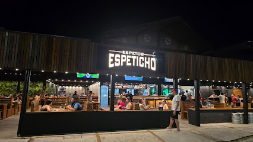
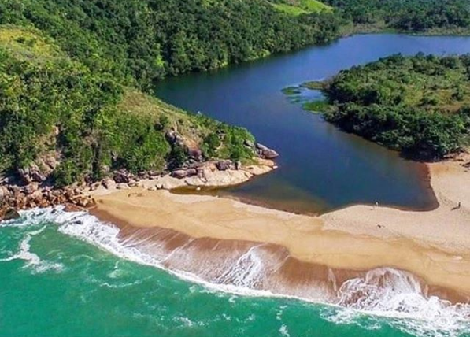
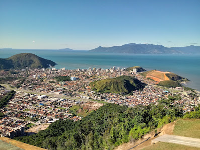
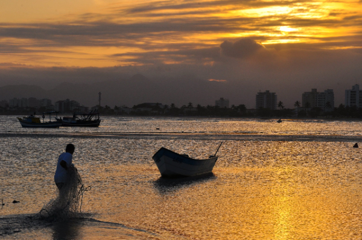
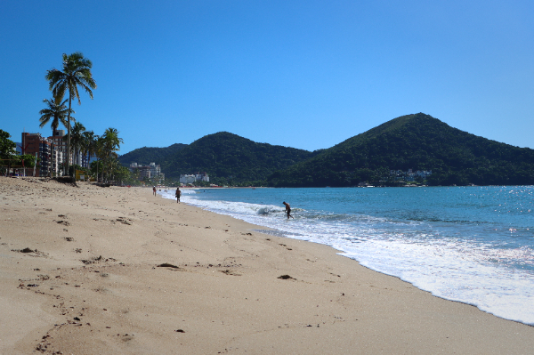
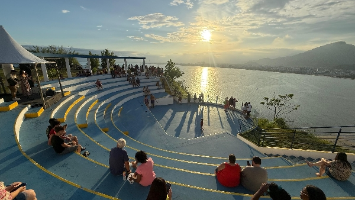
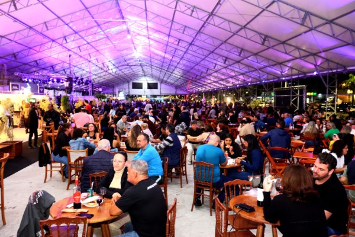

hear the siren song call of death
░░░░░░░░░░░░░░░░░░░░░░░░░░░░░░░░░░░░░░░░░░░░░░░░░░░░░░░░░░░░░░░░░░
turismo em Caraguatatuba
Considerada a Capital do Litoral norte Paulista, Caraguá oferece mais do que uma lista pode descrever.
░░░░░░░░░░░░░░░░░░░░░░░░░░░░░░░░░░░░░░░░░░░░░░░░░░░░░░░░░░░░░░░░░░░░░░░░░░░░░░░░░░░░░░░░░░░░░░░░░░░░░░░░░░░░░░░░░░░░░░░░░░░░░░░░░░░░
Espeticho. bar, churrascaria e restaurante

Um restaurante de classe mas casual para toda a família, se você vem de ubatuba, essa será provavelmente a sua primeira experiência com a gastronomia salgada
que a cidade aguardou para você e acompanhantes.
░░░░░░░░░░░░░░░░░░░░░░░░░░░░░░░░░░░░░░░░░░░░░░░░░░░░░░░░░░░░░░░░░░░░░░░░░░░░░░░░░░░░░░░░░░░░░░░░░░░░░░░░░░░░░░░░░░░░░░░░░░░░░░░░░░░░
Lagoa Azul

uma reserva natural que atrai visitantes de todos os estados do país,
aqueles que gostam das ondas do mar podem ficar proximos dos apreciadores de águas doces e serenas, com uma bela vista.
░░░░░░░░░░░░░░░░░░░░░░░░░░░░░░░░░░░░░░░░░░░░░░░░░░░░░░░░░░░░░░░░░░░░░░░░░░░░░░░░░░░░░░░░░░░░░░░░░░░░░░░░░░░░░░░░░░░░░░░░░░░░░░░░░░░░
Morro do Santo Antônio

o Morro do Santo Antônio é um caso especial, não só proporciona uma fabulosa vista de toda a cidade, e de Ilha Bela no horizonte,
também tem ali a rampa de salto de parapente para os corajosos, e para subir até o topo é uma boa caminhada para os apreciadores.
░░░░░░░░░░░░░░░░░░░░░░░░░░░░░░░░░░░░░░░░░░░░░░░░░░░░░░░░░░░░░░░░░░░░░░░░░░░░░░░░░░░░░░░░░░░░░░░░░░░░░░░░░░░░░░░░░░░░░░░░░░░░░░░░░░░░
As Praias de Caraguá

O que não falta em Caraguatatuba são praias, suas longas praias de grandes vasos de areia atraem visitantes de todo o país.
Duas das que demonstram essas variações de caracteristica são praia do Camaroeiro e a Martin de Sá, a Praia do Camaroeiro
sendo uma das menores mas mais diferentes de todas, uma praia raza onde os barcos encalham devido ao banco de areia
criando uma vista que não se vê em muitos lugares, nem mesmo na cidade.

Martin de Sá, do outro literal lado da cidade, é uma praia longa onde o mar fica fundo rapidamente, suas águas mais calmas
atraem banhistas e sua extensão fascina aos olhos. isso sem contar a visão do amanhecer.
Essas são apenas duas praias que Caraguá tem a oferecer, e pouco juz esse texto faz em respeito à beleza delas.
░░░░░░░░░░░░░░░░░░░░░░░░░░░░░░░░░░░░░░░░░░░░░░░░░░░░░░░░░░░░░░░░░░░░░░░░░░░░░░░░░░░░░░░░░░░░░░░░░░░░░░░░░░░░░░░░░░░░░░░░░░░░░░░░░░░░
Mirante do Camaroeiro

Logo acima da praia existe um complexo construido só para a apreciação, não do Camaroeiro, mas de toda a cidade,
o Mirante proporciona uma vista total de todo o centro da cidade e até a Serra do Mar permite ver.
░░░░░░░░░░░░░░░░░░░░░░░░░░░░░░░░░░░░░░░░░░░░░░░░░░░░░░░░░░░░░░░░░░░░░░░░░░░░░░░░░░░░░░░░░░░░░░░░░░░░░░░░░░░░░░░░░░░░░░░░░░░░░░░░░░░░
Os eventos mensais

O que não falta para essa cicade são eventos que enchem de visitantes e participantes,
o ano todo tomado por pelo menos um evento especial no mês que toma conta da praça no centro da cidade,
comida, música, empreendimento, carros (que deveria ter mais), mais comida, o que não falta é desculpa para usar aquela área enorme,
e quando não é usada se torna um ponto de encontro e de lazer onde as pessoas tornam aquele galpão aberto algo próprio delas.
░░░░░░░░░░░░░░░░░░░░░░░░░░░░░░░░░░░░░░░░░░░░░░░░░░░░░░░░░░░░░░░░░░░░░░░░░░░░░░░░░░░░░░░░░░░░░░░░░░░░░░░░░░░░░░░░░░░░░░░░░░░░░░░░░░░░
Só o começo